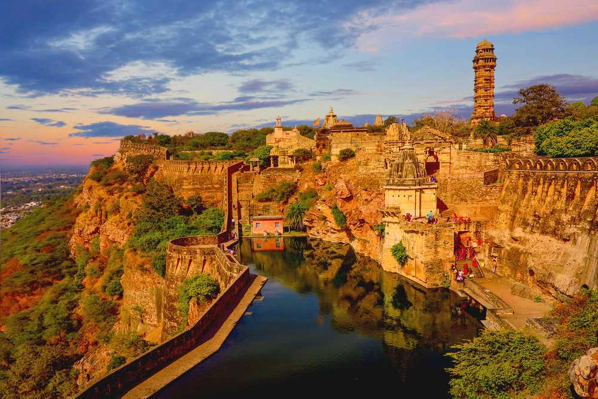
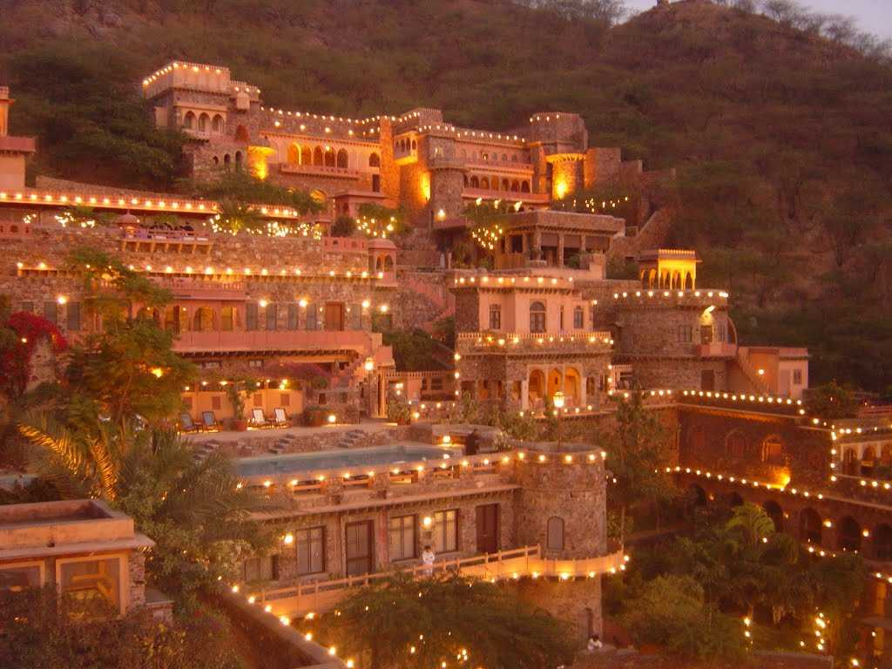
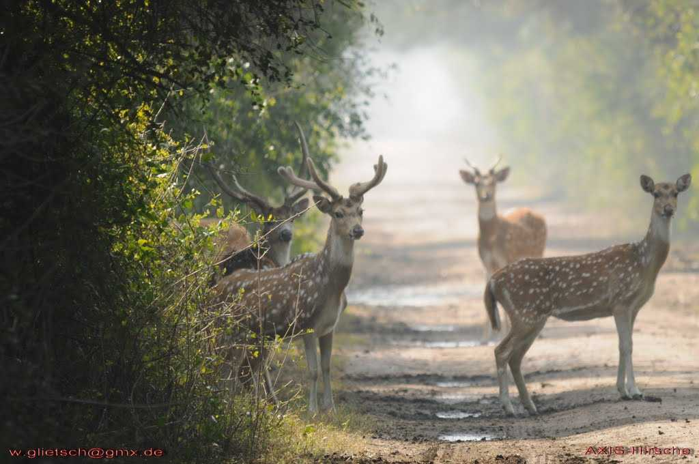

Jaipur, the capital city of Rajasthan, stands as a jewel in the crown of the Golden Triangle, alongside Delhi and Agra. This enchanting city, often referred to as the "Pink City," owes its nickname to the terracotta-pink hue that adorns many of its buildings.
Udaipur, the "City of Lakes," stands as a jewel in the crown of Rajasthan, India. Nestled amidst the Aravalli Range, this city captivates visitors with its regal charm, historic grandeur, and scenic landscapes.
Jodhpur, fondly known as the "Blue City" due to the indigo hues of its houses, is a historic city located in the heart of Rajasthan, India. Situated on the eastern edge of the Thar Desert, Jodhpur is renowned for its majestic Mehrangarh Fort, one of the largest forts in India, offering panoramic views of the city's azure skyline.

Mehrangarh, also known as Mehran Fort was built by Rao Jodha in 1459 in Jodhpur, is one of the largest forts in the country. It is situated at the top of a 410 feet elevated hill and guarded by massive walls.
Jaisalmer, a mesmerizing destination nestled in the heart of the Thar Desert, is a jewel in the crown of Rajasthan. Often referred to as the "Golden City," Jaisalmer captivates visitors with its sandstone architecture, picturesque landscapes, and rich cultural heritage.

The only hill station of Rajasthan, Mount Abu is located in the Aravali range. The most important attraction, however, are undoubtedly the Dilwara temples, which is one of the most stunning pieces of architecture in the country.
Nestled amidst the Aravalli Hills, the charming town of Nathdwara is literally translates to "The Gateway of the Lord'. It is situated in the heart of Rajasthan, on the banks of river Banas and is a pristine picturesque location. It is also a sacred Hindu site and is flocked by thousands of tourists every year.

Located in South-Eastern Rajasthan, Chittorgarh is known for Chittorgarh Fort, the largest fort in India built on a hilltop, spreading over an area of around 700 acres. The capital of the erstwhile kingdom of Mewar, the magnificent fortress will always be remembered for the courageous self-sacrificing Jauhar performed by Rani Padmini to thwart the conquest of the fort by Alauddin Khilji.
Pushka is a small temple town located around 15 km from Ajmer in Rajasthan. A perfect choice for a weekend getaway from Jaipur, Pushkar has an array of cafes and hostels for a backpacking trip. Every November, Pushkar is host to the Pushkar Mela, one of the biggest camel fairs in the country.

Neemrana town is located in Alwar in Rajasthan on Delhi-Jaipur highway. It is famous for its magnificent Neemrana Fort Palace. It was built in 1464 AD, a palace from where Rajput Maharaja Prithvi Raj Chauhan III reigned.
Located in the midst of Thar Desert, Bikaner is a "cultural paradise and a traveller's haven". Bikaner with its magnificence in architecture, art and culture is filled with colour, festivity and cultural marvels.

Bharatpur is located in the Braj region of state Rajasthan, around 38 km from Mathura. Bharatpur is famous for the Keoladeo National Park, which habitats over 370 species of animals and birds. It is recognised as one of the most popular birds feeding and breeding grounds.